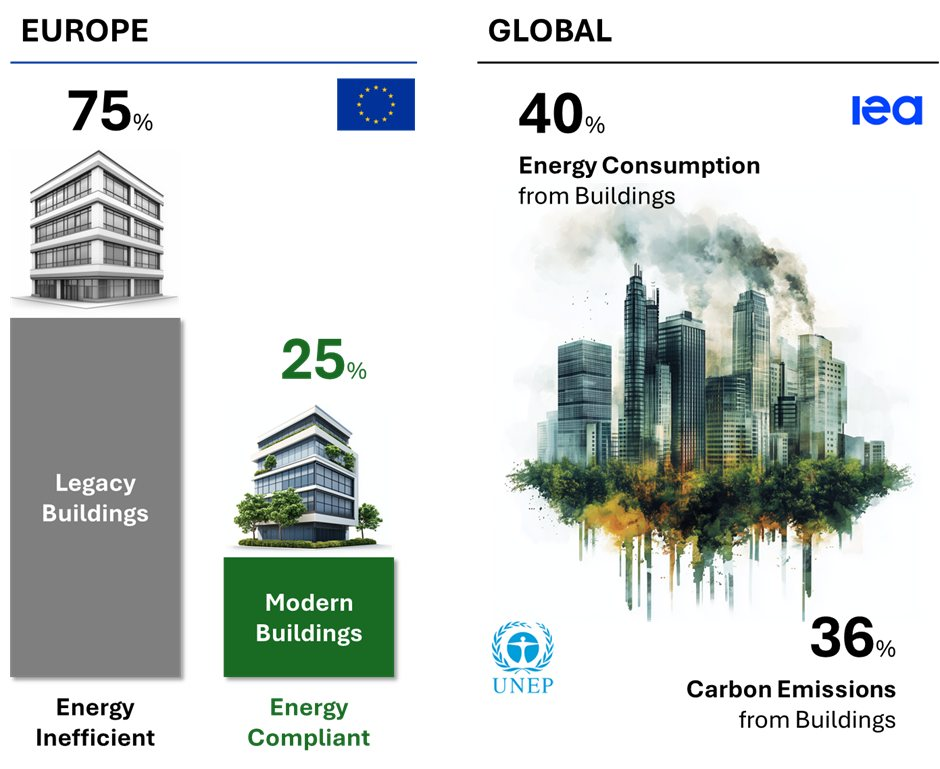
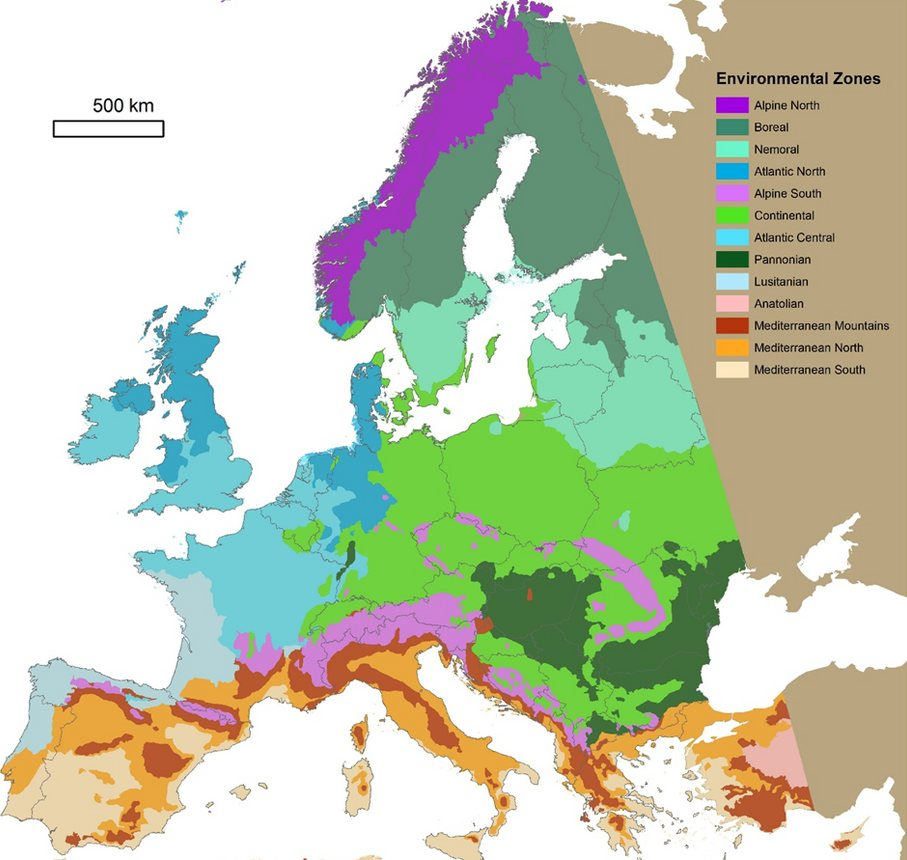
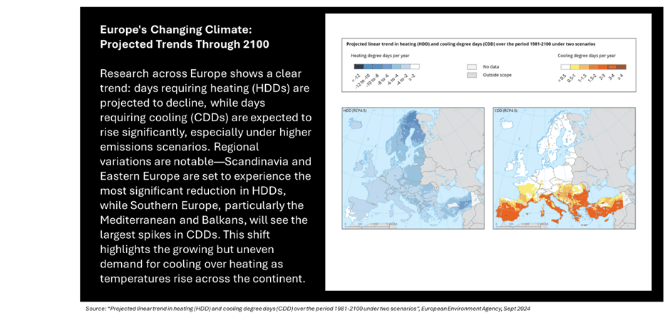
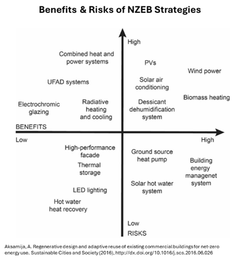

Strategic Insight: Retrofitting Europe’s Aging CRE for Climate Resilience
Nearly 75% of Europe’s commercial buildings were constructed before the modern energy code era, when “insulation” often meant thick walls and good intentions [1]. Now, as the EU marches toward net-zero mandates and energy prices remain volatile, these outdated structures represent both a drag on performance and a once-in-a-cycle opportunity.
With buildings accounting for 40% of Europe’s energy use and 36% of CO₂ emissions, they sit at the nexus of policy, capital allocation, and climate resilience [2]. But the challenge goes far beyond swapping out boilers or upgrading windows. Every retrofit requires a calculus of trade-offs: location vs. cost, disruption vs. compliance, ambition vs. feasibility.

Upgrading these older structures is rarely straightforward. Retrofitting involves complexities - legal, operational, and financial - that require careful orchestration. These challenges are compounded by factors ranging from global energy prices to specific country-level energy sources, government incentives, and the varying climate conditions across Europe. Add to this the ripple effects of global energy price shocks and it's clear that effective retrofitting requires more than engineering. It requires strategic clarity.
To optimize retrofits, key questions must be asked:
- Are hot days becoming more frequent?
- What is the balance of heating vs. cooling needs throughout the year?
- Do other climate events like flooding, hailstorms, or wildfires occur?
- How are these trends shifting over time?
Understanding these challenges and leveraging data effectively can help asset managers unlock retrofit potential while minimizing disruption and ensuring long-term success.
Location and Climate: Key Drivers of Retrofit Optimization
Geographic location and climate are critical factors when optimizing building retrofits, as they directly influence energy needs, technology choices, and cost efficiency. For instance, an office building in Helsinki, with limited daylight hours and cold winters, might benefit most from enhanced insulation, triple-glazed windows, and ground-source heat pumps to retain heat and cut energy use. In contrast, the same building in Madrid, which faces high cooling demands, would require solar shading, efficient air conditioning systems, and photovoltaic panels to manage indoor temperatures effectively.
Europe's climatic zones vary greatly, and each region presents unique annual and seasonal conditions. Factors like extreme storms, floods, or droughts must be assessed when planning retrofits, underscoring the need for location-specific solutions that optimize energy performance while managing climate risks.

Source: “The Environmental Stratification of Europe”, Metzger - University of Edinburgh, 2018
A strategic, top-down approach evaluates environmental factors, local energy sources, and regulations to develop solutions tailored to each region. This ensures energy efficiency targets are met while managing costs and responding to specific climate challenges.
Studies show that retrofitting building façades in dry, warm climates can reduce energy demand by up to 65%, while similar efforts in cooler regions yield around 50% savings, highlighting the crucial role of regional adaptation [3]. And the shifting trends in climate even within Europe may present new challenges for regional adaptation and mitigation strategies.

Building Age and Structure: Targeting the Most Inefficient
The age, design, and construction of commercial buildings in Europe significantly influence the scope and impact of energy-efficient retrofits. It is estimated that up to 75% of the EU’s building stock was built before 1990, this creates a substantial opportunity for energy savings when these older buildings are upgraded [4].

Identifying Energy Performance Gaps
Older buildings often have outdated insulation, single-pane windows, and inefficient heating, ventilation, and air conditioning (HVAC) systems, all of which contribute to high energy usage and emissions. Retrofitting these elements can significantly enhance building performance and align assets with modern regulations like the EU Energy Performance of Buildings Directive (EPBD).
To do this effectively, a thorough technical analysis of the entire building is necessary - evaluating both its physical structure and operational systems.
Structural Assessments as the Foundation
While the latest modelling strategies enable accurate desktop energy assessments with only GIS data structure building façade information [5], detailed on-site evaluations remain essential. These assessments analyze the building’s envelope, mechanical systems, and design to identify inefficiencies and determine the best interventions. For heritage buildings, for example, customized approaches might be needed to preserve architectural integrity while integrating modern energy-saving technologies like advanced insulation and efficient lighting.
Conducting building audits is the first critical step, ensuring the most impactful retrofits are identified and prioritized. This forms the foundation of a strategic, phased approach, enabling asset managers to target upgrades precisely.
Managing Targeted Retrofits
Focusing on the most inefficient assets can yield significant energy reductions. Portfolio managers should prioritize retrofits based on a mix of risk and improvement potential. A simplified framework for optimizing retrofits might include:
Preliminary Review - Conduct technical assessments across the portfolio to gather data on building structure and performance (e.g., insulation quality, HVAC efficiency). Use audits, evaluations, and digital building information models (BIMs) to establish a comprehensive baseline and identify the best areas for improvement.
Gate 1: Portfolio Analysis and Prioritization - Rank buildings based on commercial benefits (e.g., asset value increase, regulatory compliance) and technical improvement potential (e.g., energy or CO2 savings). Categorize assets for prioritization using this data.

Gate 2: Retrofits Option Assessment - Analyze the economic and environmental impact of each option against the current state. Consider factors like tenant disruption and risk exposure, then recommend the best upgrade package balancing financial and environmental benefits.
Gate 3: Business Planning & Whole-System Review - Develop a business case to support renovation decisions and align financial and logistical impacts at the portfolio level with corporate goals. Reassess plans as needed if they prove unfeasible.
A phased approach allows managers to align upgrades with lease renewals, tenant schedules, and financial cycles. This strategic phasing minimizes risks such as tenant disruptions and operational setbacks while ensuring compliance with regulatory requirements. The Ledger Carbon Model integrates these elements, providing a data-driven framework that aligns retrofit efforts with business objectives and asset value optimization.
The Case for Comprehensive Retrofitting
Data clearly shows that comprehensive retrofits, combining multiple measures, achieve better results than single upgrades. For example, integrating LED lighting systems not only saves energy but also reduces cooling demand, benefiting HVAC efficiency [6].
A notable example is the Empire State Building retrofit, which included advanced insulation, HVAC upgrades, and efficient lighting. This led to a 38% reduction in energy use and a projected savings of over 105,000 metric tons of CO2 over 15 years, while also increasing the building’s net present value by $22 million [7]. Comprehensive retrofits, such as the one implemented at the Empire State Building, demonstrate the significant impact that holistic approaches can have, aligning with evolving European regulations like the EPBD while also delivering measurable commercial benefits. However, comprehensive programs must be carefully managed to minimize impact on operations and asset values.
Navigating the Practical Realities of Retrofitting
While the technical benefits of retrofits are evident, execution often faces legal and operational barriers. Retrofitting occupied buildings requires precise planning to minimize business disruption, and financial or legal conditions may further limit scope and timing.
In response to these challenges, the Ledger Carbon Model has been developed to add the ‘digital twin’ concept to commercial and legal aspects of the building (e.g. leases, operating agreements, loans, etc.) - leveraging traditional assessments into scenario-based roadmaps that balance energy performance with compliance, tenant relations, and financial constraints, optimizing outcomes with minimal disruptions.
Takeaways for Investors and Asset Managers
As the EU accelerates its shift towards net-zero carbon buildings, investors and asset managers must adopt proactive and phased approaches to effectively retrofit commercial properties. Key insights include:
- Localized, Climate-Adaptive Solutions: Climate variations across Europe (from colder northern zones to warmer southern regions) necessitate tailored retrofitting approaches. Retrofitting with high-efficiency heating solutions is vital for northern climates, while cooling and solar solutions are essential in warmer regions to optimize energy use.
- Comprehensive Retrofits Yield Greater Efficiency Gains: Data shows that deep retrofits combining multiple interventions, such as insulation, HVAC enhancements, and lighting systems, can lead to material energy reductions, particularly when upgrades address both building envelope and mechanical systems simultaneously.
- Phased Implementation and Regulatory Alignment are Key: Retrofitting must be phased to align with lease renewals, financial cycles, and tenant schedules to reduce business disruption. In parallel, managers need to navigate evolving EU regulations, using scenario-based models and digital twins to ensure compliance and optimize results.
Conclusion: A Balanced Approach to Retrofitting
Retrofitting Europe’s aging building stock offers a vital opportunity to reduce energy use and emissions. Yet, the path is complex, with varying climates, tenant agreements, and financial limitations require a strategic, data-driven approach. Using phased implementation and legal foresight ensures retrofits deliver energy savings, enhance property value, and drive long-term sustainability.
Tools like the Ledger Carbon Model provide a way forward, integrating digital planning with technical assessments to balance performance and compliance. As demand for sustainable buildings rises, those mastering retrofitting will lead the charge in a competitive market.
It had long since come to my attention that people of accomplishment rarely sat back and let things happen to them. They went out and happened to things. - Elinor Smith [8]
As Europe’s commercial real estate landscape transforms, those who proactively drive energy efficient solutions will shape a more sustainable future, embodying the spirit of accomplishment that Elinor Smith so eloquently describes.
[1] “In focus: Energy efficient buildings”, European Commission, Apr 2024
[2] “Fit for 55: making buildings in the EU greener”, European Council, Apr 2024
[3] “A critical review of façade retrofit measures for minimizing heating and cooling demand in existing buildings”, Sustainable Cities and Society - Volume 64, 2021
[4] “97% of Buildings in the EU Needs to be Upgraded”, Building Performance Institute Europe, Oct 2017
[5] Martinez, Andrea., & Choi, Joon-Ho., Exploring the potential use of building facade information to estimate energy performance. Sustainable Cities and Society http://dx.doi.org/10.1016/j.scs.2017.07.022
[6] “Whole-Building Retrofits: A Gateway to Climate Stabilization”, Olgyay et al, 2010
[7] “Achieving Radically Energy Efficient Retrofits: The Empire State Building Example”, Fluhrer et al, 2010
[8] “Aviatrix”, 1981, p. 1